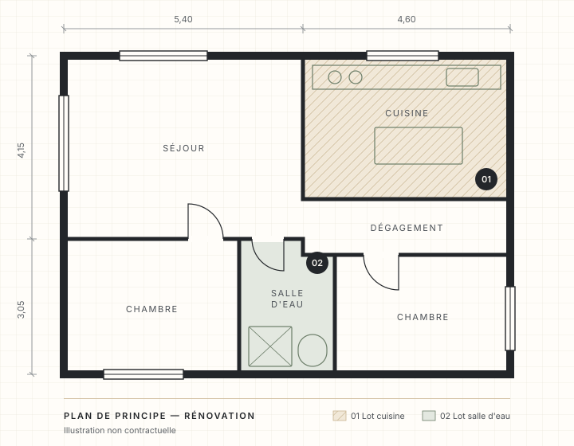
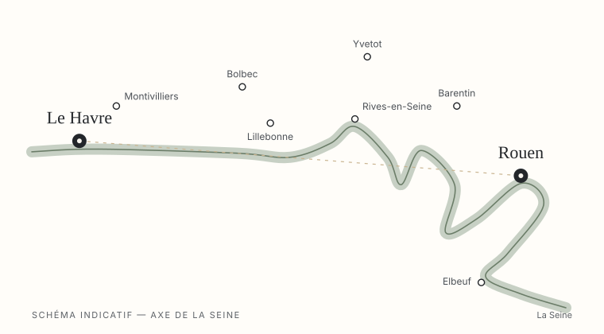

Préparation du projet
Transformer une intention en programme de travaux clair, chiffrable et réaliste.
- Visite et relevé de l'existant
- Définition des besoins et des priorités
- Descriptif des travaux par lot
Maîtrise d'œuvre · Rénovation · Rouen et Le Havre
Ligne&Bati accompagne les particuliers propriétaires d'une maison ou d'un appartement, de la définition des travaux jusqu'au suivi du chantier. Vous gardez la main sur les décisions ; Ligne&Bati organise, compare et coordonne.

L'approche
Des devis difficiles à comparer, des interventions mal enchaînées, des décisions prises dans l'urgence : la plupart des difficultés de chantier trouvent leur origine dans la préparation.
Ligne&Bati apporte une expérience opérationnelle du bâtiment et du suivi de chantier pour structurer votre projet : définir précisément les travaux, consulter les entreprises sur une base commune, puis suivre l'avancement et les décisions jusqu'à la réception.
En savoir plus sur Ligne&BatiVous choisissez les entreprises et signez directement avec elles.
Contenu, honoraires et limites sont précisés avant tout engagement.
Une seule personne suit votre projet, de la première visite à la réception.
Prestations
Vous pouvez confier une seule étape ou l'ensemble de l'accompagnement. Le périmètre retenu est toujours fixé par écrit.
Transformer une intention en programme de travaux clair, chiffrable et réaliste.
Obtenir des offres comparables et choisir en connaissance de cause.
Faire avancer le chantier dans l'ordre, en gardant une trace de chaque décision.
Déroulement
Chaque étape se conclut par un point de décision. Vous savez toujours où en est le projet et ce qui vient ensuite.
Comprendre votre besoin, votre bien, votre budget et votre calendrier.
Fixer le périmètre des travaux et rédiger un descriptif précis.
Solliciter des entreprises sur une base commune et comparer leurs offres.
Suivre le chantier et les décisions, selon la mission contractuelle.
Principes de travail
Un déroulement identique pour chaque projet, des étapes connues à l'avance et des documents types qui évitent les oublis.
Des explications sans jargon, des documents lisibles et des limites de mission énoncées dès le départ.
Anticiper l'ordre des interventions, les délais d'approvisionnement et les contraintes du logement occupé.
Chaque réunion donne lieu à un compte rendu : qui fait quoi, pour quand, et ce qui a été décidé.
Zone d'intervention
Ligne&Bati intervient auprès des particuliers de la Métropole Rouen Normandie, de la communauté urbaine Le Havre Seine Métropole et des communes situées entre les deux, en Seine-Maritime.
La proximité permet des visites régulières sur le chantier. Pour une commune non citée, précisez-la dans votre demande.

Questions fréquentes
Le maître d'œuvre organise et suit la réalisation de travaux pour le compte du propriétaire, appelé « maître d'ouvrage » : il aide à définir les travaux, à consulter les entreprises, puis à coordonner le chantier selon la mission confiée.
L'architecte exerce une profession réglementée, inscrite à l'Ordre des architectes. Il est seul habilité à établir le projet architectural lorsque la loi impose son intervention. Ligne&Bati n'est pas un cabinet d'architecture et ne se présente pas comme tel.
Pour un particulier, le recours à un architecte est obligatoire lorsque le projet nécessite un permis de construire et que la surface de plancher de la construction dépasse 150 m², existant compris après travaux (article R.431-2 du Code de l'urbanisme). D'autres situations peuvent l'imposer, par exemple lorsque le demandeur est une société.
Ce point est vérifié dès le premier échange. Si votre projet relève d'un architecte, vous en êtes informé et orienté en conséquence.
Non. Les travaux sont réalisés par des entreprises que vous choisissez. Vous signez directement avec elles leurs devis et vous les payez directement. Ligne&Bati vous aide à préparer, comparer et suivre, selon la mission définie par écrit.
Les honoraires dépendent de la mission choisie et de l'ampleur du projet. Ils font l'objet d'une proposition écrite, remise avant tout engagement, qui précise le contenu de la mission, son prix et ses limites. Aucun frais n'est engagé sans votre accord.
Cela dépend du nombre d'intervenants et de votre disponibilité. Une salle de bains fait souvent intervenir plusieurs corps de métier (plomberie, électricité, carrelage, menuiserie) : leur enchaînement compte autant que la qualité de chacun. La mission peut se limiter à la préparation ou à la consultation des entreprises, si c'est ce dont vous avez besoin.
Ligne&Bati n'est pas « Accompagnateur Rénov' » agréé et ne monte pas de dossiers d'aides. Pour connaître les aides auxquelles vous pouvez prétendre, le service public France Rénov' propose un conseil gratuit et indépendant (france-renov.gouv.fr). Les exigences liées aux aides peuvent ensuite être intégrées à la consultation des entreprises.
Vous. Ligne&Bati prépare la consultation, rassemble les offres et vous remet une analyse comparative. La décision finale vous appartient, et c'est vous qui signez avec l'entreprise retenue.
La zone d'intervention couvre Rouen, Le Havre et leurs environs, notamment le long de la Seine entre les deux villes. Pour un projet situé un peu plus loin, indiquez la commune dans votre demande : la faisabilité est étudiée au cas par cas.
Premier échange
Décrivez votre projet en quelques lignes : type de bien, travaux envisagés, calendrier. Le premier échange sert à comprendre votre besoin et à vérifier qu'un accompagnement vous sera utile. Il est sans engagement.